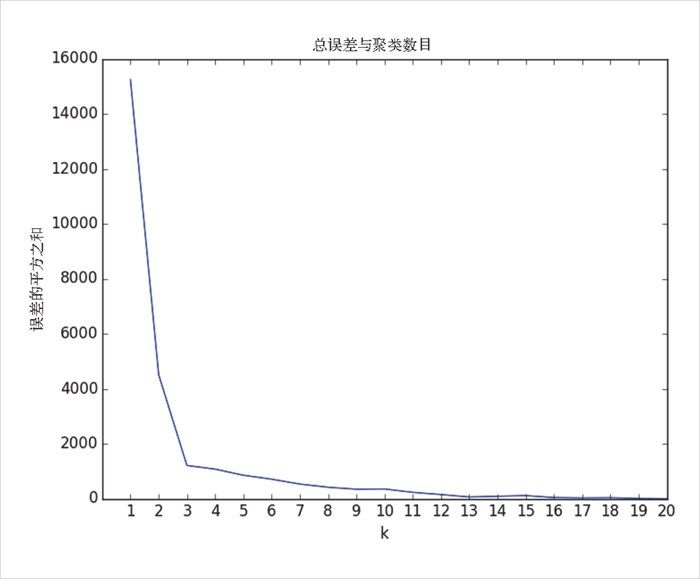

19.4 选择聚类数目k
在前一个例子中，聚类数目 k 的选择是由外部因素决定的，我们无法控制。但是通常情况下，事情并非如此。k 的选择方法可谓五花八门，一个比较易于理解的方法是以误差（即每个数据点到所在聚类的中心的距离）的平方之和作为 k 的函数，画出该函数的图像，并在其“弯曲”的地方寻找合适的取值：
def squared_clustering_errors(inputs, k):
"""finds the total squared error from k-means clustering the inputs"""
clusterer = KMeans(k)
clusterer.train(inputs)
means = clusterer.means
assignments = map(clusterer.classify, inputs)
return sum(squared_distance(input, means[cluster])
for input, cluster in zip(inputs, assignments))
# 现在画出1至len（输入）的聚类图
ks = range(1, len(inputs) + 1)
errors = [squared_clustering_errors(inputs, k) for k in ks]
plt.plot(ks, errors)
plt.xticks(ks)
plt.xlabel("k")
plt.ylabel("误差的平方之和")
plt.title("总误差与聚类数目")
plt.show()

图 19-4：选择聚类数目 k
从图 19-4 可以看出，这种方法得到的结果与我们最初的目测值是相符的，也就是说 3 是一个“合适”的聚类数目。